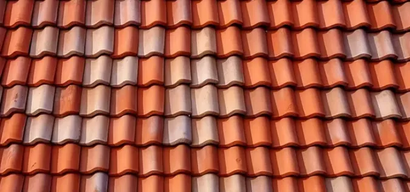
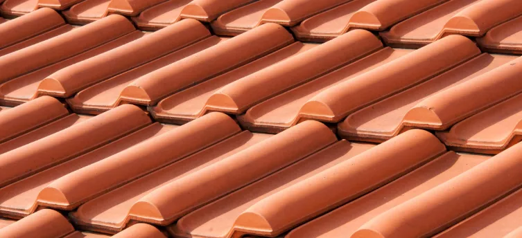

Expert Tile Roofing Services
Verstera Roofing specializes in premium tile roofing systems that combine timeless beauty with exceptional durability and energy efficiency. Our experienced teams have installed and repaired countless tile roofs throughout Central Texas, bringing distinctive Mediterranean, Spanish, and southwestern architectural styles to life.
Tile roofing offers unmatched longevity along with superior resistance to extreme weather, fire protection, and excellent energy efficiency. Whether you're building a new home, replacing an aging roof, or repairing storm damage, our tile roofing specialists will deliver exceptional results that enhance your home's appearance, value, and protection.
We work with the highest quality clay, concrete, and terracottatiles from trusted manufacturers, ensuring your new roof will stand the test of time while requiring minimal maintenance. Our installation techniques are specifically designed for Central Texas's climate, providing superior protection against our region's intense sun, occasional hailstorms, and high winds.
Schedule Tile Roof Consultation
Types of Tile Roofing We Offer
Spanish Tile
Iconic barrel-shaped tiles that create a distinctive Mediterranean appearance, available in traditional terracotta and a variety of color options to complement your home's aesthetic.
Clay Tile
Natural clay tiles with exceptional durability, fire resistance, and a timeless appearance that develops a beautiful patina over time. Available in various profiles and color blends.
Concrete Tile
Versatile, cost-effective concrete tiles that mimic the appearance of clay or slate while offering excellent durability, available in a wide range of styles, textures, and colors.
Lightweight Tile Options
Modern, lightweight tile alternatives that offer the aesthetic of traditional tile with less structural load, suitable for homes that cannot support the weight of standard tiles.
Our Tile Roofing Services
New Tile Roof Installation
Complete design and installation of new tile roofing systems for new construction or roof replacement projects, with meticulous attention to structural requirements and aesthetics.
Tile Roof Repair
Expert repair of broken or damaged tiles, failed underlayment, leaks, and other issues with color-matching and precise technique to maintain your roof's integrity and appearance.
Roof Conversion to Tile
Structural assessment and conversion of existing roofing systems to tile, including necessary reinforcement and adaptation for proper installation and performance.
Tile Roof Maintenance
Preventative maintenance programs to extend the life of your tile roof, including inspection, cleaning, minor repairs, and sealant renewal as needed.
Historical Tile Restoration
Specialized restoration services for historic properties with antique tile roofing, preserving original materials where possible and matching replacements when necessary.
Storm Damage Repair
Rapid assessment and repair of tile roofs damaged by hail, wind, or falling debris, with comprehensive documentation for insurance claims.
Benefits of Tile Roofing

- Exceptional Longevity: Properly installed tile roofs can last 50-100 years, offering superior return on investment compared to conventional roofing.
- Weather Resistance: Excellent performance in extreme weather, including resistance to high winds, hail damage, and Texas heat.
- Energy Efficiency: Natural thermal properties that help keep homes cooler in summer and warmer in winter, reducing energy costs.
- Fire Resistance: Class A fire rating that provides superior protection against wildfires and embers.
- Low Maintenance: Minimal upkeep requirements with individual tiles that can be replaced if damaged without disturbing the entire roof.
- Distinctive Appearance: Timeless beauty that enhances architectural style and significantly improves curb appeal and property value.
- Color Retention: Inherent color stability that resists fading from UV exposure, maintaining appearance over decades.
- Environmentally Friendly: Natural, recyclable materials with excellent durability that reduces landfill waste from frequent reroofing.
- Pest Resistance: Impervious to damage from termites, rodents, and other pests that commonly affect roofing materials.
- Sound Insulation: Excellent noise dampening properties that reduce sound transmission from rain, hail, and external noise.
Our Premium Tile Roof Installation Process
Installing a tile roof requires specialized expertise, proper structural support, and meticulous attention to detail. At Verstera Roofing, our comprehensive installation process ensures your tile roof will provide decades of beauty and protection:
- Structural Assessment: Thorough evaluation of your home's structure to ensure it can support the weight of tile roofing, with reinforcement recommendations if needed.
- Design Consultation: Selection of tile type, profile, color, and pattern that complements your home's architecture and meets your aesthetic preferences.
- Detailed Proposal: Comprehensive proposal with clear specifications, timeline, and pricing, including all necessary components for a complete roofing system.
- Premium Materials: Sourcing of high-quality tiles and components, including heavy-duty underlayment, proper flashing, and ventilation systems.
- Expert Installation: Installation by specialized tile roofing crews with years of experience and specific training in proper tile application techniques.
- Quality Inspections: Multiple quality checks throughout the installation process to ensure proper alignment, attachment, and flashing details.
- Thorough Cleanup: Complete cleanup of the property upon project completion, with careful removal of all debris and protection of landscaping.
- Final Walkthrough: Detailed final inspection with the homeowner to ensure complete satisfaction with the finished tile roof.
- Warranty Coverage: Provision of manufacturer warranties on materials and our own workmanship guarantee for your peace of mind.
Tile Roof Maintenance
While tile roofs are known for their longevity and durability, proper maintenance ensures they reach their full potential lifespan. Our recommended maintenance schedule includes:
Annual Inspections
Professional examination of your tile roof to identify cracked or shifted tiles, underlayment issues, or flashing problems before they lead to leaks.
Debris Removal
Clearing of debris from valleys, gutters, and roof surfaces to prevent water damming and ensure proper drainage during rainfall.
Valley & Flashing Maintenance
Inspection and repair of critical water-shedding areas including valleys, flashing around penetrations, and ridge caps.
Individual Tile Replacement
Prompt replacement of any cracked, broken, or displaced tiles to maintain the roof's water-shedding capabilities and appearance.
What Our Customers Say

Elevate Your Home with a Premium Tile Roof
Whether you're building a new home, replacing an aging roof, or restoring a historic property, a tile roof from Verstera Roofing combines timeless beauty with exceptional durability. Our tile roofing specialists will guide you through every step of the process, from selecting the perfect tile style to completing a flawless installation that will protect and enhance your home for decades to come.
Request Tile ConsultationTile Roofing FAQs
How long do tile roofs last in Central Texas?
Properly installed tile roofs in Central Texas typically last 50-75 years for concrete tiles and 75-100+ years for clay and terracotta tiles. This exceptional longevity is one of the primary advantages of choosing tile roofing, though performance depends on proper installation, quality underlayment, and regular maintenance. While the upfront cost may be higher than conventional roofing, the lifespan makes tile roofing an excellent long-term investment.
Can my home support a tile roof?
Most homes built to modern building codes can support concrete tiles, but clay and terracotta tiles are heavier and may require structural reinforcement. Before installation, we conduct a thorough structural assessment to determine if reinforcement is needed. For homes that cannot support traditional tiles, we offer lightweight concrete and composite tile alternatives that provide a similar appearance with less structural load.
Are tile roofs energy-efficient in hot Texas summers?
Yes, tile roofs are exceptionally energy-efficient in our hot Texas climate. The natural thermal properties of tile create an air barrier between the roof surface and your attic, reducing heat transfer. Additionally, the curved shape of many tile profiles promotes air circulation and natural ventilation. Many homeowners report energy savings of 20-30% after switching from asphalt shingles to tile roofing. For maximum efficiency, we recommend lighter colored tiles that reflect more solar radiation.
How do tile roofs perform in severe weather?
Quality tile roofing systems perform excellently in Central Texas weather conditions when properly installed. Modern concrete and clay tiles are tested to withstand high winds (up to 150 mph for many profiles) and are highly resistant to UV degradation and extreme temperature fluctuations. While individual tiles can crack from large hail or falling debris, the roofing system as a whole remains water-tight due to the underlayment, and damaged tiles can be individually replaced without compromising the entire roof.
What maintenance does a tile roof require?
Tile roofs require minimal maintenance compared to other roofing materials, but they are not maintenance-free. We recommend annual inspections to check for cracked tiles, inspect underlayment at critical areas, clear debris from valleys and gutters, and ensure flashing remains properly sealed. The underlayment typically needs replacement every 20-30 years, which can be done without replacing the tiles themselves if they remain in good condition.
What is the cost of a tile roof compared to other materials?
Tile roofing typically costs 2-3 times more than standard asphalt shingles for initial installation, with clay and terracotta generally being more expensive than concrete tiles. However, when considering the total lifecycle cost (including longevity and reduced maintenance), tile roofing often proves more economical over the long term. A tile roof may last through 2-3 complete cycles of asphalt shingle replacement, offsetting the higher initial investment while adding significant property value.